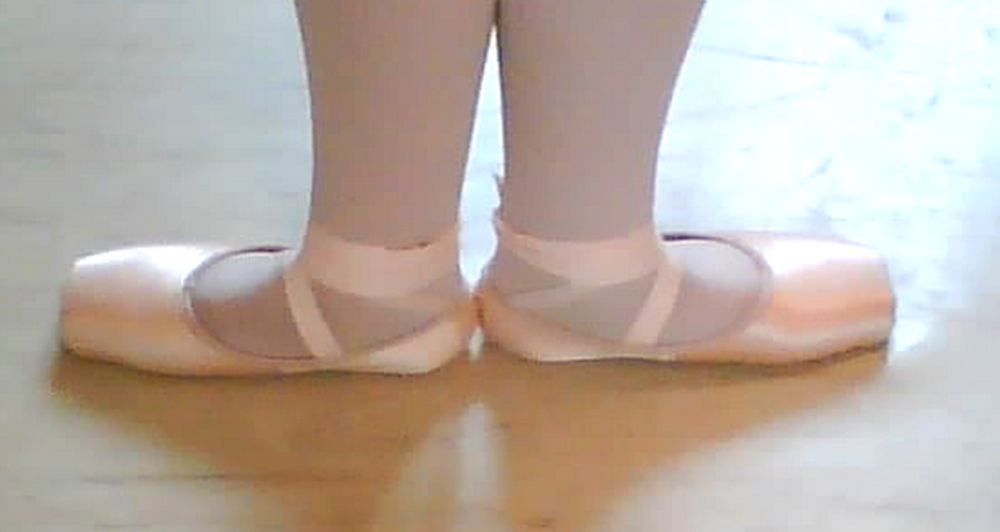
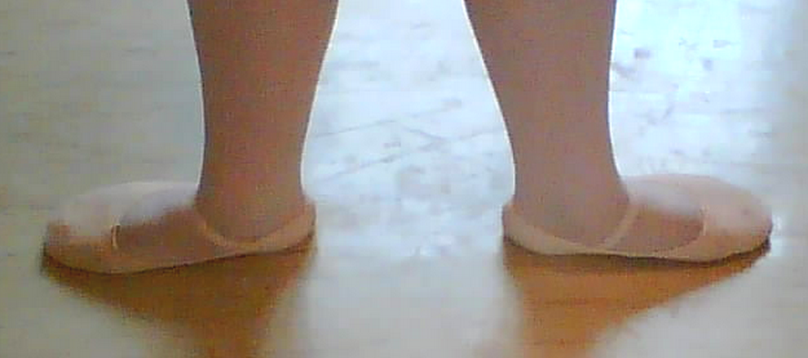
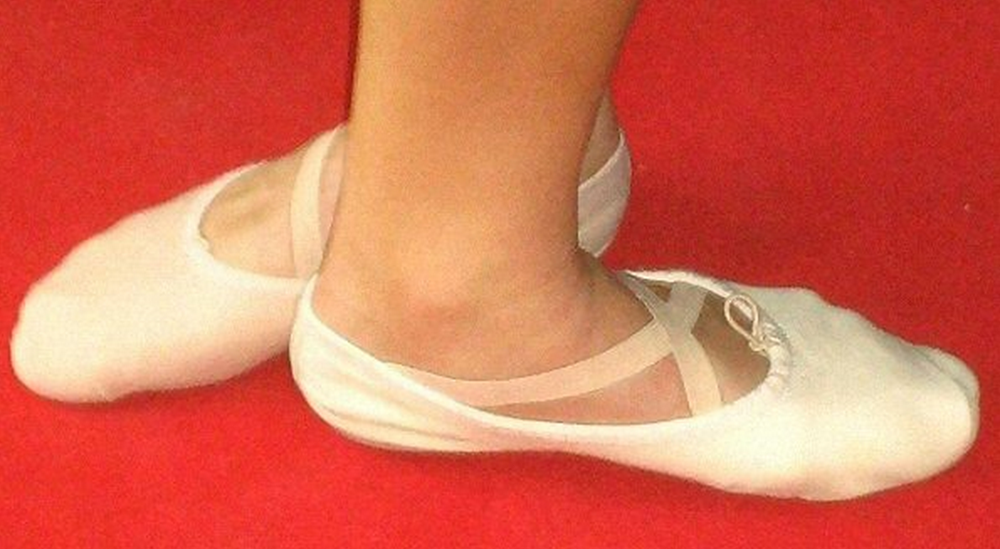
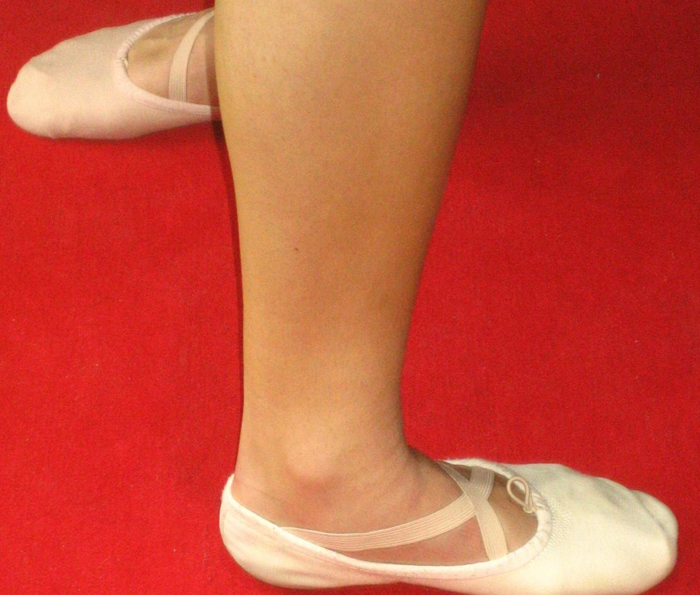
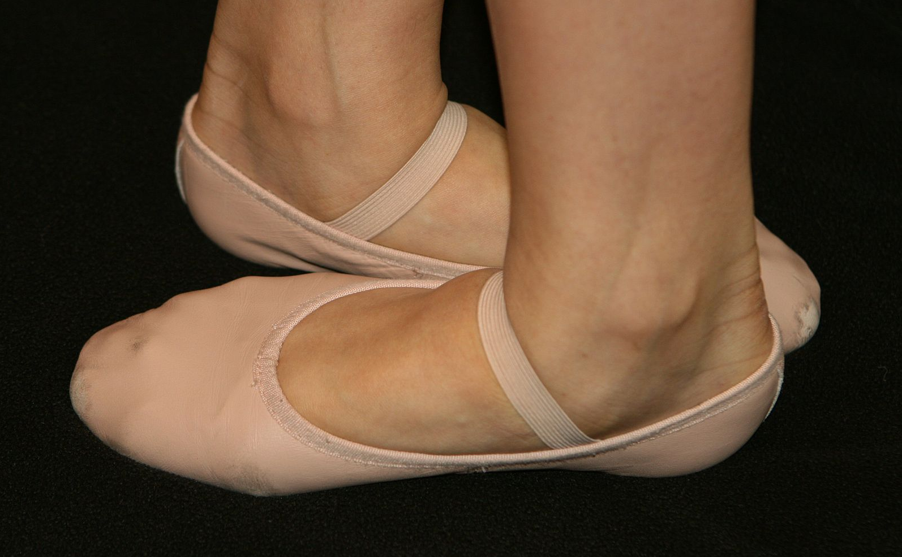
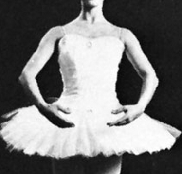
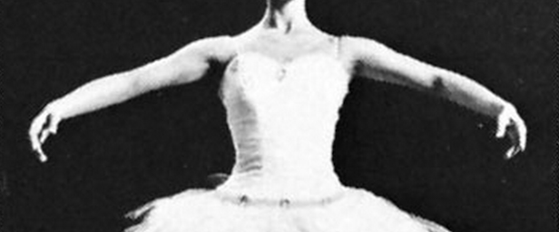
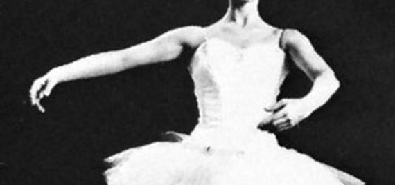
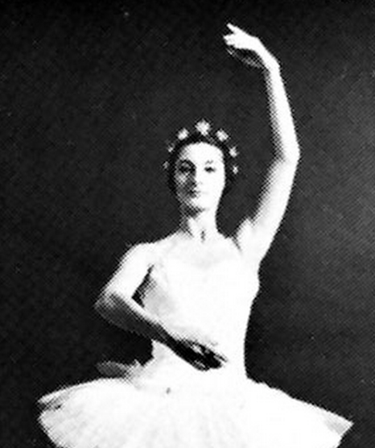
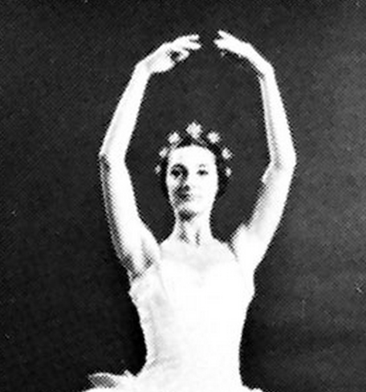

It All Starts with the First Position
Your First Positions for Ballet
Ballet is a formalized form of dance with its origins in the Italian Renaissance courts of the 15th and 16th centuries. Ballet spread from Italy to France with the help of Catherine de' Medici, where ballet developed even further under her aristocratic influence.
Ballet Positions: Feet
First Position
The feet are aligned and touching heel to heel, making as nearly a straight alignment as possible. The knees are also touching with legs straightened. In beginners' classes, most exercises at the barre start from first position.
Second Position
The feet are aligned as in first position, but with heels spaced approximately twelve inches apart. The term seconde generally means to or at the side.
Third Position
One foot is placed in front of the other so that the heel of the front foot is near the arch of the back foot. There are two third positions, depending on which foot is in front. In beginners' classes this is a transition position in the progress to fifth position, or when a dancer is physically incapable of a fifth position (especially in adult beginners' classes).
Forth Position
There are two types of fourth position: open and closed. In both cases, one foot is placed approximately twelve inches in front of the other. In open fourth position the heels are aligned, while in closed fourth position the heel of the front foot is aligned with the toe of the back foot. There are two variations of each type of fourth position, as determined by which foot is in front.
Fifth Position
One foot is placed in front of, and in contact with the other, with the heel of one foot aligned with the toe of the other foot. There are two fifth positions, depending on which foot is in front.
Ballet Positions: Arms
First Position
The feet are aligned and touching heel to heel, making as nearly a straight alignment as possible. The knees are also touching with legs straightened. In beginners' classes, most exercises at the barre start from first position.
Second Position
The feet are aligned as in first position, but with heels spaced approximately twelve inches apart. The term seconde generally means to or at the side.
Third Position
One foot is placed in front of the other so that the heel of the front foot is near the arch of the back foot. There are two third positions, depending on which foot is in front. In beginners' classes this is a transition position in the progress to fifth position, or when a dancer is physically incapable of a fifth position (especially in adult beginners' classes).
Fourth Position
There are two types of fourth position: open and closed. In both cases, one foot is placed approximately twelve inches in front of the other. In open fourth position the heels are aligned, while in closed fourth position the heel of the front foot is aligned with the toe of the back foot. There are two variations of each type of fourth position, as determined by which foot is in front.
Fifth Position
One foot is placed in front of, and in contact with the other, with the heel of one foot aligned with the toe of the other foot. There are two fifth positions, depending on which foot is in front.
“And even this heart of mine has something artificial. The dancers have sewn it into a bag of pink satin, pink satin slightly faded, like their dancing shoes.” – Edgar Degas